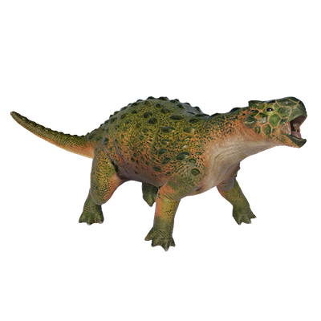

Useful Website
The herbivorous ankylosaurid Minmi lived around 120m years ago during the Early Cretaceous period and can grow to a length of over 3m. Minmi is notable for its long tail and the horizontal armour plates that cover its body, protecting it from attacks by predators, while its legs are unusually long for a dinosaur from the Ankylosauria family, allowing it to run quickly.
